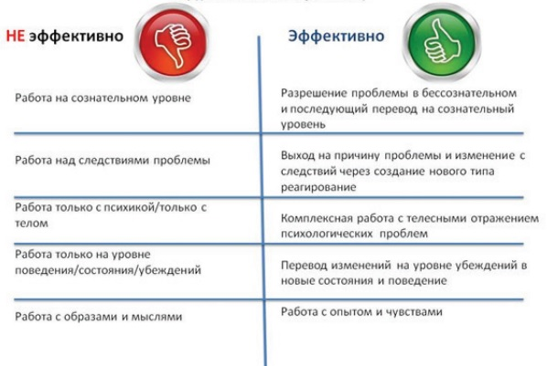

Противопоказания:
- Беременность и послеродовой период
- Психические расстройства (шизофрения, острые психозы, паранойя и др) и наркомания - учет у нарколога или психиатра. Прием психотропных препаратов
- Эпилепсия, судорожные припадки, сердечно-сосудистые заболевания, астма
- Незажившие переломы, вывихи, послеоперационный период. Сотрясение мозга за последние полгода, травмы позвоночника и грудной клетки
- Физическое недомогание, заболевания, инфекции (ОРВИ, ОРЗ и тд)
- Предрасположенность к кровотечениям (Гемофилия)
- Недоверие к методу и специалисту
- У Вас последние деньги и Вы надеетесь на волшебную таблетку, которая изменит всю вашу жизнь
- Также я не работаю с людьми, которые обратились ко мне под чьим-то давлением. Важно, чтобы Вы сами хотели что-то изменить
Структура сеанса. Основные этапы:
- Расслабление тела и ума. Погружение в состояние редактирования опыта
- Регрессия в ядро травмы, первопричину проблемы
- Работа с соматической памятью (Тело все помнит)
- Работа с бессознательными убеждениями и логическими ошибками
- Этап прощения
- Формирование новых выводов и решений
- Перепросмотр всех травматичных событий
- Тест результата
Из книги Владимира Макулова
